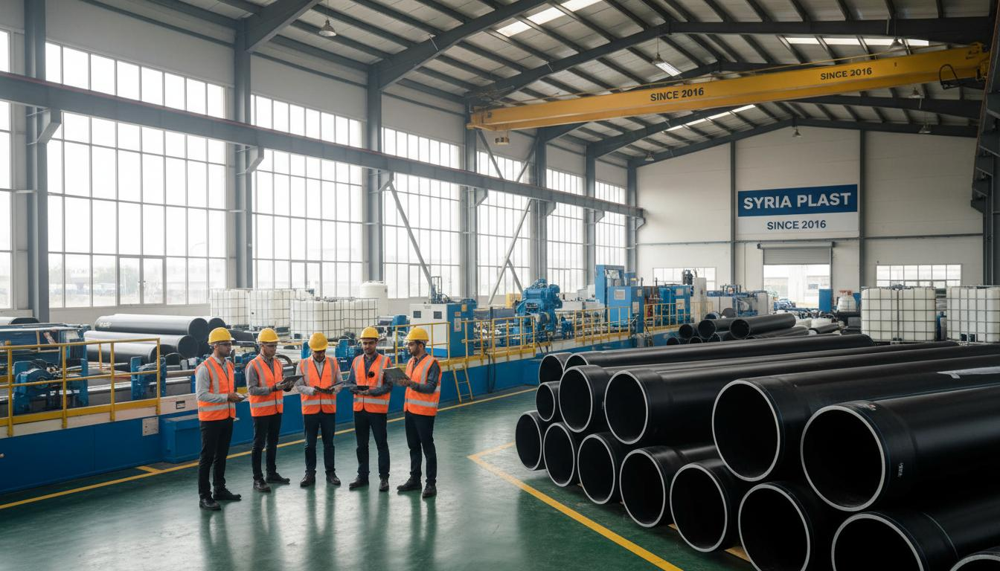

قصتنا
بدأت رحلة سوريا بلاست عام 2016 بخطي إنتاج لأنابيب الصرف الصحي حتى 800 مم. ثم توسعت خطوط الإنتاج لتصل إلى 1200 مم، وأُدخلت تقنيات تصنيع أنابيب HDPE، خزانات المياه، وأنظمة PPR وPVC.
لاحقاً تم إدخال تصنيع ألواح PVC وغرف التفتيش البلاستيكية، وهو إنتاج متفرد على مستوى الإقليم. اليوم يعمل في المعمل أكثر من 150 كادراً متخصصاً، ضمن منظومة إنتاجية متطورة تخدم مشاريع البنية التحتية في سوريا.
مراحل التطور
انطلاق المعمل بخطَّي إنتاج لأنابيب الصرف الصحي حتى قطر 800 مم في مدينة حسياء الصناعية بحمص.
إضافة خطَّي إنتاج جديدَين للصرف الصحي ليصل الإنتاج إلى قطر 1200 مم، مع رفع القدرة الإنتاجية.
إدخال آلات لإنتاج خزانات المياه البلاستيكية وتجهيز خطوط إنتاج أنابيب HDPE لشبكات مياه الشرب.
إنتاج أنابيب PPR وPVC مع كامل الإكسسوارات لتلبية احتياجات شبكات المياه الداخلية والمشاريع السكنية.
إدخال ماكينة تصنيع ألواح PVC وتصنيع غرف التفتيش البلاستيكية — إنتاج متفرد على مستوى الإقليم.
أكثر من 150 كادراً، طاقة إنتاجية 80 طناً شهرياً، ومساهمة في مشاريع كبرى على مستوى القطر.
رؤيتنا
أن نكون مورداً استراتيجياً لتجهيزات البنية التحتية محلياً وإقليمياً وأن نكون جزءاً أساسياً في إعادة الإعمار في سوريا من خلال تطوير خطوط الإنتاج والتوسع المستمر.
"نعمل باستمرار على تحديث الآلات، إدخال منتجات جديدة، والتوسع نحو أسواق إقليمية، مع دراسة فرص التصدير مستقبلاً."
قيمنا
سنوات خبرة
كادر متخصص
طاقة إنتاجية شهرية
خطوط إنتاج متخصصة
مشاريعنا
سوريا بلاست لم تكن مجرد مورد مواد، بل شريك في تنفيذ مشاريع استراتيجية.
توريد منتجات بلاستيكية لمشروع الرازي ضمن ماروتا سيتي، أحد أكبر مشاريع إعادة الإعمار في دمشق.
توريد مشاريع المياه والبنى التحتية لصالح الإنشاءات العسكرية – فرع دمشق.
توريد مشاريع المياه والبنى التحتية لصالح الإنشاءات العسكرية – فرع حمص.
فريقنا مستعد لتقديم الاستشارة الفنية وتأمين أفضل حلول البنية التحتية البلاستيكية.